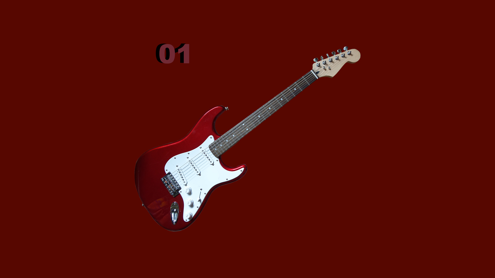
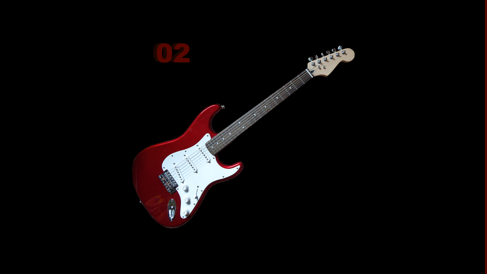
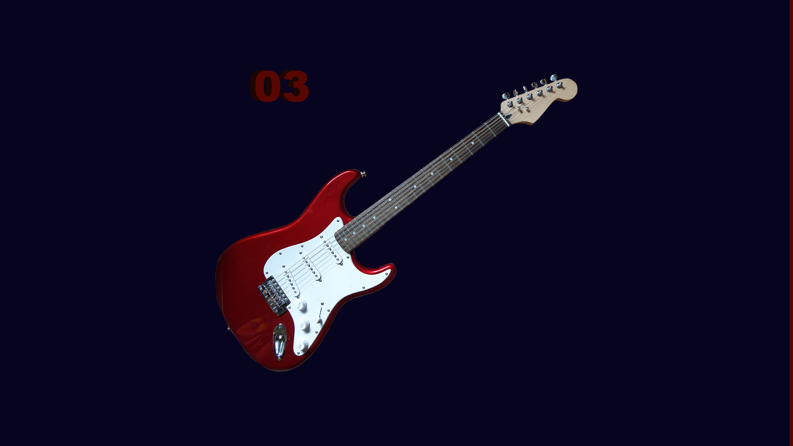
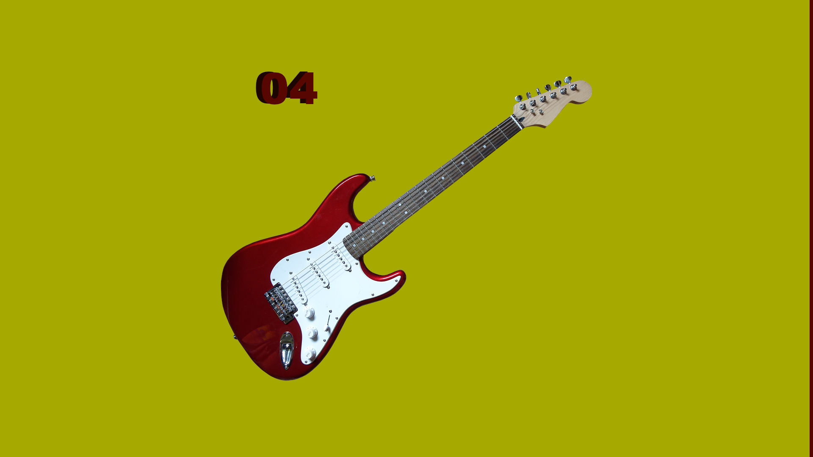

O desafio proposto foi criar um site que apresente quatro vídeos legais para que o seu visitante possa visitar. A página principal deverá conter um layout quadrado com os 4 vídeos (2:2). Ao clicar em qualquer uma das thumbs, abrirá uma página especial para cada um. O vídeo não poderá estar hospedado diretamente na pasta. Também deverá ter um link para voltar para a página anterior.
Vídeos de rock radical para assistir:



